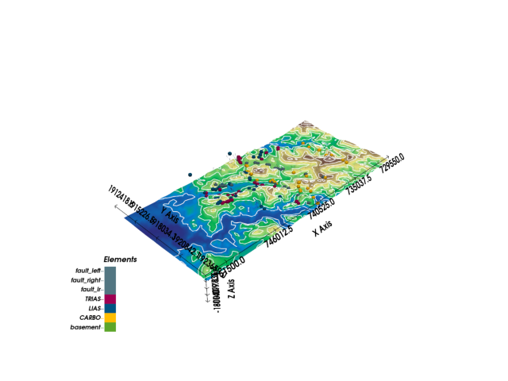
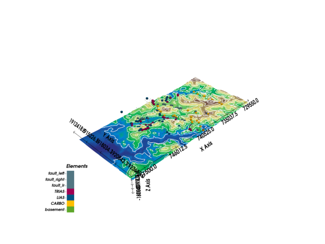
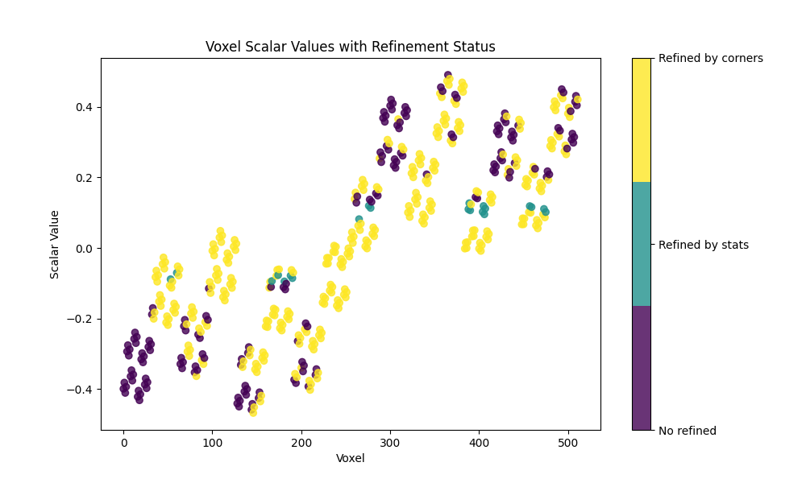
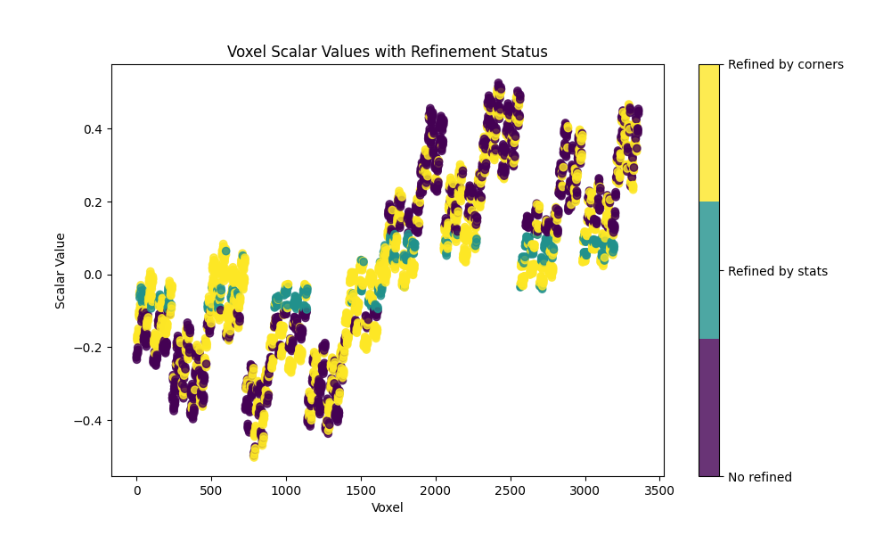
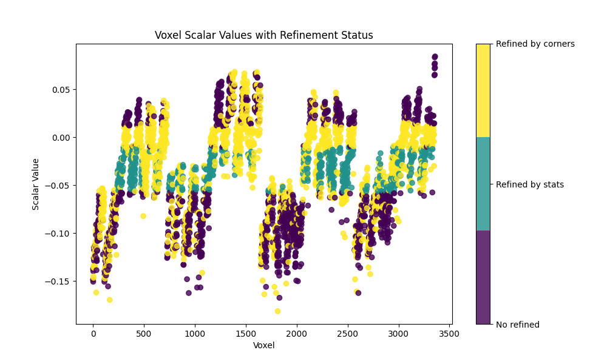
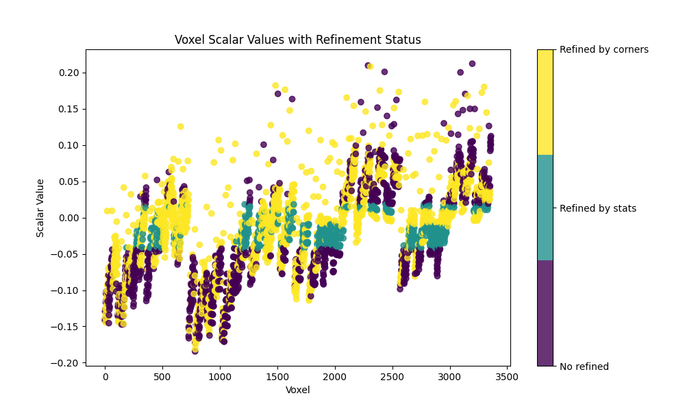
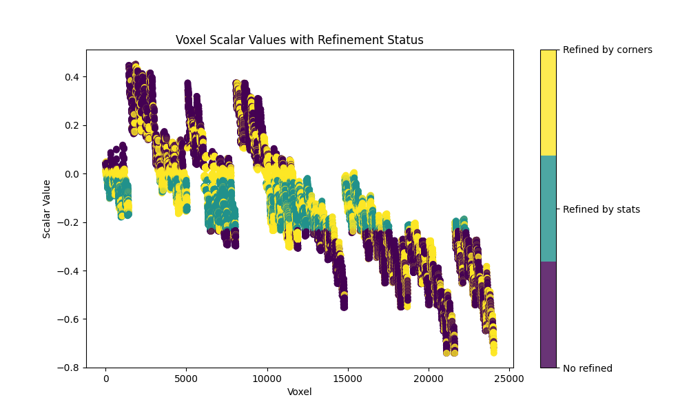
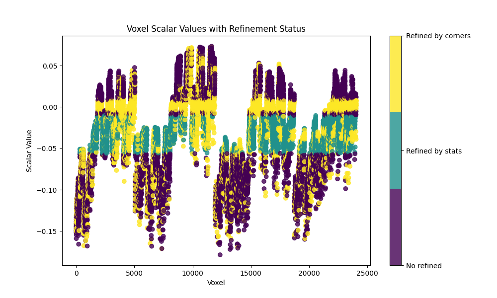

Note
Go to the end to download the full example code
Alesmodel: Plotting Sections and Maps¶
# %% # .. admonition:: Explanation # # This model is generally quite unstable and requires float64 precision to find a solution. # The lack of data in one corner for the TRIAS and LIAS series causes the model to bend unrealistically, # eroding the CARBO layer, which disappears in that section. The simple way to solve this is by adding more data in that area. # However, I left it as is because I did not construct the model. #
import gempy as gp
import gempy_viewer as gpv
import os
Setting up paths
cwd = os.getcwd()
data_path = os.path.join(cwd, 'examples') if 'examples' not in cwd else os.path.join(cwd, '../..')
path_interf = os.path.join(data_path, "data/input_data/AlesModel/2018_interf.csv")
path_orient = os.path.join(data_path, "data/input_data/AlesModel/2018_orient_clust_n_init5_0.csv")
path_dem = os.path.join(data_path, "data/input_data/AlesModel/_cropped_DEM_coarse.tif")
Creating the geological model
geo_model: gp.data.GeoModel = gp.create_geomodel(
project_name='Claudius',
extent=[729550.0, 751500.0, 1913500.0, 1923650.0, -1800.0, 800.0],
resolution=None,
refinement=6,
importer_helper=gp.data.ImporterHelper(
path_to_orientations=path_orient,
path_to_surface_points=path_interf,
)
)
Setting up the section grid
gp.set_section_grid(
grid=geo_model.grid,
section_dict={
'section1': ([732000, 1916000], [745000, 1916000], [200, 150])
}
)
Active grids: GridTypes.NONE|SECTIONS|OCTREE
Sorting lithologies
gp.map_stack_to_surfaces(
gempy_model=geo_model,
mapping_object={
'fault_left': 'fault_left',
'fault_right': 'fault_right',
'fault_lr': 'fault_lr',
'Trias_Series': ('TRIAS', 'LIAS'),
'Carbon_Series': 'CARBO',
'Basement_Series': 'basement'
},
remove_unused_series=True
)
Could not find element 'basement' in any group.
Changing colors
geo_model.structural_frame.get_element_by_name("LIAS").color = "#015482"
geo_model.structural_frame.get_element_by_name("TRIAS").color = "#9f0052"
geo_model.structural_frame.get_element_by_name("CARBO").color = "#ffbe00"
Plotting the 2D model
gpv.plot_2d(geo_model, direction='y')

<gempy_viewer.modules.plot_2d.visualization_2d.Plot2D object at 0x7f87c7fafcd0>
Plotting section traces
gpv.plot_section_traces(geo_model)

<function plot_section_traces at 0x7f8824fca170>
Setting faults
gp.set_is_fault(
frame=geo_model.structural_frame,
fault_groups=[
geo_model.structural_frame.get_group_by_name('fault_left'),
geo_model.structural_frame.get_group_by_name('fault_right'),
geo_model.structural_frame.get_group_by_name('fault_lr')
],
change_color=True
)
Setting topography from file
gp.set_topography_from_file(
grid=geo_model.grid,
filepath=path_dem,
crop_to_extent=[729550.0, 751500.0, 1913500.0, 1923650.0]
)
# Plotting 3D model with topography
gpv.plot_3d(geo_model, show_topography=True, ve=1, image=True)
 
Active grids: GridTypes.NONE|SECTIONS|TOPOGRAPHY|OCTREE
<gempy_viewer.modules.plot_3d.vista.GemPyToVista object at 0x7f87cc7b1360>
Getting the Carbon Series
carbo = geo_model.structural_frame.get_group_by_name("Carbon_Series")
Modifying interpolation options for better model fitting
geo_model.interpolation_options.number_octree_levels_surface = 4
geo_model.interpolation_options.kernel_options.range = 0.8
gp.modify_surface_points(
geo_model=geo_model,
elements_names=["CARBO", "LIAS", "TRIAS"],
nugget=0.005
)
Displaying the structural frame
StructuralFrame(
structural_groups=[
StructuralGroup(
name=fault_left,
structural_relation=StackRelationType.FAULT,
elements=[
Element(
name=fault_left,
color=#527682,
is_active=True
)
]
),
StructuralGroup(
name=fault_right,
structural_relation=StackRelationType.FAULT,
elements=[
Element(
name=fault_right,
color=#527682,
is_active=True
)
]
),
StructuralGroup(
name=fault_lr,
structural_relation=StackRelationType.FAULT,
elements=[
Element(
name=fault_lr,
color=#527682,
is_active=True
)
]
),
StructuralGroup(
name=Trias_Series,
structural_relation=StackRelationType.ERODE,
elements=[
Element(
name=TRIAS,
color=#9f0052,
is_active=True
),
Element(
name=LIAS,
color=#015482,
is_active=True
)
]
),
StructuralGroup(
name=Carbon_Series,
structural_relation=StackRelationType.ERODE,
elements=[
Element(
name=CARBO,
color=#ffbe00,
is_active=True
)
]
)
],
fault_relations=
[[False, False, False, True, True],
[False, False, False, True, True],
[False, False, False, True, True],
[False, False, False, False, False],
[False, False, False, False, False]],
Explanation of model characteristics and adjustments This model has characteristics that make it difficult to get the right default values: - It is large, and we want high resolution - Some series have a large conditional number (i.e., the model input is not very stable) To address these issues: - Reduce the chunk size during evaluation to trade speed for memory - Reduce the std of the error parameter in octree refinement, which evaluates fewer voxels but may leave some without refinement Enable debugging options to help tune these parameters.
Setting verbose and condition number options for debugging
Observations and parameter adjustments The octree refinement is making the octree grid almost dense, and smaller chunks are needed to avoid running out of memory. Adjusting parameters accordingly:
Computing the model with the adjusted settings
geo_model.interpolation_options.mesh_extraction = False
_ = gp.compute_model(
geo_model,
engine_config=gp.data.GemPyEngineConfig(
backend=gp.data.AvailableBackends.PYTORCH,
use_gpu=True,
dtype="float64"
)
)
- 
- 
- 
- 
- 
- 
Setting Backend To: AvailableBackends.PYTORCH
Condition number: 2917573.7407638184.
Chunking done: 19 chunks
Condition number: 1174481.1989654184.
Chunking done: 9 chunks
Condition number: 1642063.3117937546.
Chunking done: 11 chunks
Condition number: 1586673.9519253937.
Chunking done: 246 chunks
Condition number: 1122611.6721707566.
Chunking done: 198 chunks
Condition number: 1586673.9519253937.
Condition number: 1122611.6721707566.
Chunking done: 32 chunks
Chunking done: 26 chunks
Number of voxels marked by stats: 134 of torch.Size([512]).
Number of voxels marked by corners : 317
Total voxels: 134
Dense Grid would be 512 voxels
Number of voxels marked by stats: 130 of torch.Size([512]).
Number of voxels marked by corners : 317
Total voxels: 188
Dense Grid would be 512 voxels
Number of voxels marked by stats: 149 of torch.Size([512]).
Number of voxels marked by corners : 317
Total voxels: 239
Dense Grid would be 512 voxels
Number of voxels marked by stats: 131 of torch.Size([512]).
Number of voxels marked by corners : 317
Total voxels: 308
Dense Grid would be 512 voxels
Number of voxels marked by stats: 155 of torch.Size([512]).
Number of voxels marked by corners : 317
Total voxels: 365
Dense Grid would be 512 voxels
Chunking done: 26 chunks
Chunking done: 21 chunks
Chunking done: 15 chunks
Chunking done: 7 chunks
Chunking done: 9 chunks
Chunking done: 198 chunks
Chunking done: 159 chunks
Number of voxels marked by stats: 995 of torch.Size([3264]).
Number of voxels marked by corners : 1575
Total voxels: 995
Dense Grid would be 4096 voxels
Number of voxels marked by stats: 964 of torch.Size([3264]).
Number of voxels marked by corners : 1575
Total voxels: 1411
Dense Grid would be 4096 voxels
Number of voxels marked by stats: 1109 of torch.Size([3264]).
Number of voxels marked by corners : 1575
Total voxels: 1829
Dense Grid would be 4096 voxels
Number of voxels marked by stats: 1023 of torch.Size([3264]).
Number of voxels marked by corners : 1575
Total voxels: 2365
Dense Grid would be 4096 voxels
Number of voxels marked by stats: 1203 of torch.Size([3264]).
Number of voxels marked by corners : 1575
Total voxels: 2761
Dense Grid would be 4096 voxels
Chunking done: 14 chunks
Chunking done: 7 chunks
Chunking done: 8 chunks
Condition number: 1586673.9519253937.
Chunking done: 182 chunks
Condition number: 1122611.6721707566.
Chunking done: 146 chunks
Chunking done: 108 chunks
Chunking done: 50 chunks
Chunking done: 62 chunks
Condition number: 1586673.9519253937.
Chunking done: 1444 chunks
Condition number: 1122611.6721707566.
Chunking done: 1160 chunks
Number of voxels marked by stats: 7774 of torch.Size([23984]).
Number of voxels marked by corners : 7469
Total voxels: 7774
Dense Grid would be 32768 voxels
Number of voxels marked by stats: 7506 of torch.Size([23984]).
Number of voxels marked by corners : 7469
Total voxels: 11092
Dense Grid would be 32768 voxels
Number of voxels marked by stats: 8637 of torch.Size([23984]).
Number of voxels marked by corners : 7469
Total voxels: 14458
Dense Grid would be 32768 voxels
Number of voxels marked by stats: 7964 of torch.Size([23984]).
Number of voxels marked by corners : 7469
Total voxels: 18652
Dense Grid would be 32768 voxels
Number of voxels marked by stats: 9365 of torch.Size([23984]).
Number of voxels marked by corners : 7469
Total voxels: 21748
Dense Grid would be 32768 voxels
Chunking done: 104 chunks
Chunking done: 48 chunks
Chunking done: 59 chunks
Condition number: 1586673.9519253937.
Chunking done: 1386 chunks
Condition number: 1122611.6721707566.
Chunking done: 1113 chunks
Plotting the 2D model with and without topography
<gempy_viewer.modules.plot_2d.visualization_2d.Plot2D object at 0x7f87c43ebee0>
Setting thumbnail number for Sphinx-Gallery sphinx_gallery_thumbnail_number = -1
gpv.plot_3d(geo_model, show_lith=True, show_topography=True, kwargs_plot_structured_grid={'opacity': 0.8})
<gempy_viewer.modules.plot_3d.vista.GemPyToVista object at 0x7f87bff0b880>
Total running time of the script: (1 minutes 1.181 seconds)